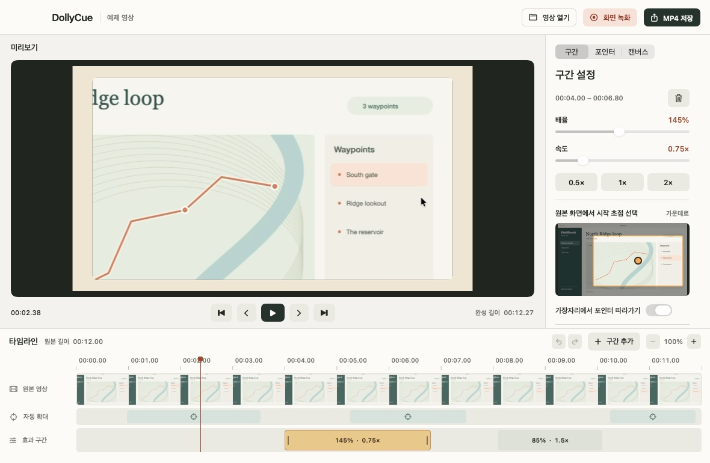

녹화하고,
보여줄 곳에 집중해요.
클릭한 곳은 확대하고, 포인터가 화면 끝으로 향하면 구도가 따라가요. Mac에서 화면을 녹화하고 타임라인에서 배율과 속도를 다듬어 보세요.
데모 재생
녹화부터
내보내기까지
- 화면을 기록해요.
- Mac의 주 화면을 녹화하거나, 저장한 영상을 불러와 바로 편집해요.
- 보여줄 장면을 잡아요.
- 클릭으로 자동 확대하고, 구간별 배율·초점·속도를 조절해요. 녹화한 포인터의 크기와 움직임도 다듬을 수 있어요.
- 공유할 영상으로 완성해요.
- 배경색과 여백, 모서리를 맞춘 뒤 미리보기를 확인하고 60fps MP4로 저장해요.
Mac에서 시작하기
macOS 15 이상이 필요해요. DollyCue 프로젝트 폴더에서 앱을 빌드하고 열어 보세요.
./scripts/build-app.sh
open build/DollyCue.app